Part 0: Setup
I designed a diverse set of creative text prompts and generated their corresponding prompt embeddings for use with the DeepFloyd IF text-to-image diffusion model. To ensure reproducibility across all experiments, I fixed the seed to 380 and consistently used it throughout the project. The following images were generated with the number of inference steps set to 20.

The following images were generated with the number of inference steps set to 40.
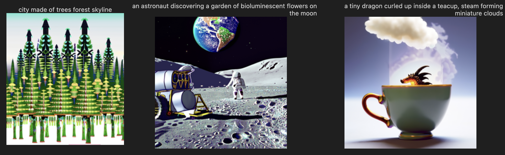
The generated images closely matched the semantic content of the text prompts, with clearer structure and finer details emerging as the number of inference steps increased. When using a lower number of steps, the outputs were faster to generate but appeared noisier and less coherent, while higher step counts produced sharper, more visually consistent results that better reflected the intended prompts.
Part 1.1: Implementing the Forward Process
I implemented the forward (noising) process of a diffusion model, which progressively corrupts a clean image by adding Gaussian noise over time. Using a resized image of the Berkeley Campanile, I applied increasing noise levels at timesteps 250, 500, and 750 to visualize how structure is gradually destroyed as the diffusion process progresses.
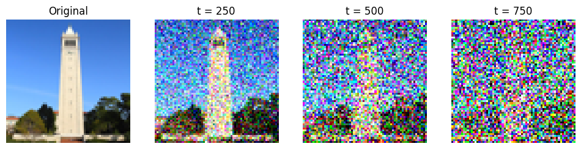
Part 1.2: Classical Denoising
I applied classical Gaussian blur filtering to noisy versions of the Berkeley Campanile at timesteps 250, 500, and 750. The results show that while Gaussian blurring can reduce high-frequency noise at lower noise levels, it quickly fails to recover meaningful structure as noise increases, producing overly smooth and distorted images.

Part 1.3: One-Step Denoising
Using a pretrained diffusion UNet from DeepFloyd IF, I performed one-step denoising on noisy versions of the Campanile at timesteps 250, 500, and 750. The model successfully predicted the noise present in each image and enabled partial reconstruction of the original signal in a single reverse step. While fine details remain degraded at higher noise levels, the results clearly demonstrate the model’s ability to recover meaningful structure far beyond what classical denoising methods can achieve.
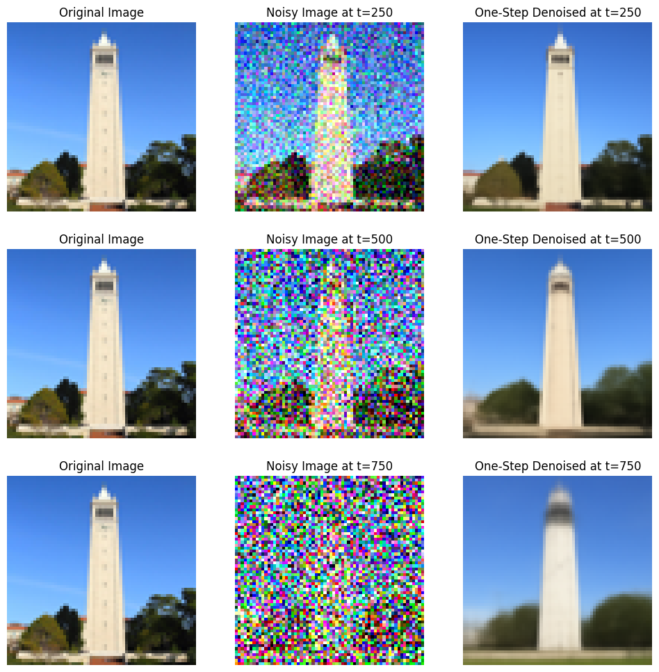
Part 1.4: Iterative Denoising
Using a strided diffusion schedule with an initial noise level of i_start = 10, I implemented the full iterative denoising process and visualized the progressive refinement of the Campanile image at regular intervals. The results clearly show how repeated diffusion steps gradually recover structure from heavy noise, producing a high-quality final reconstruction.

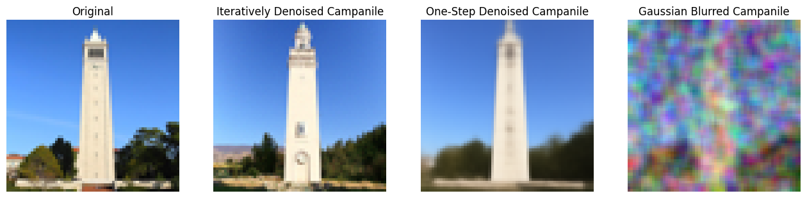
Both single-step denoising and Gaussian blur baselines perform significantly worse, highlighting the importance of multi-step diffusion for high-fidelity image restoration.
Part 1.5: Diffusion Model Sampling
By initializing the model with pure Gaussian noise and setting i_start = 0, I used the iterative diffusion process to generate images entirely from scratch. The model produces recognizable and semantically meaningful images from random noise, demonstrating the generative power of diffusion models.
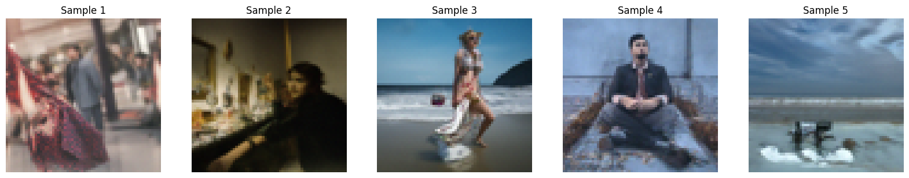
Part 1.6: Classifier-Free Guidance (CFG)
I implemented classifier-free guidance (CFG) to significantly improve image quality by combining conditional and unconditional noise predictions during sampling. Using a guidance scale of γ = 7 with the prompt “a high quality photo”, the generated images became noticeably sharper, more coherent, and more semantically aligned with the text compared to unguided sampling. This demonstrates how CFG effectively trades off diversity for higher visual fidelity and stronger prompt adherence.
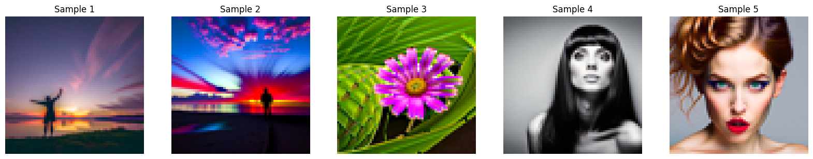
Part 1.7: Image-to-Image Translation
Using classifier-free guidance, I applied image-to-image translation via the SDEdit process to progressively edit a real photograph by injecting controlled amounts of noise and denoising it back toward the data manifold. By varying the starting noise level, I generated a smooth spectrum of edits that transition from highly altered to nearly identical to the original image. This demonstrates how diffusion models can perform controllable, structure-preserving image edits rather than only generating images from pure noise.
 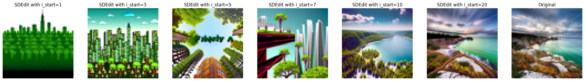
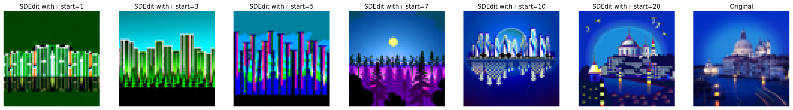
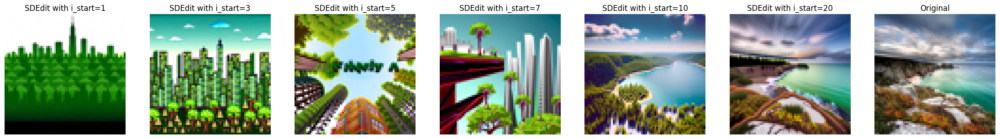
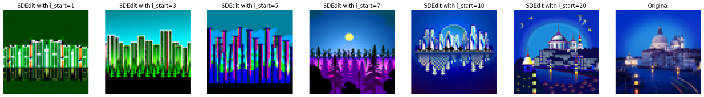
Part 1.7.1: Editing Hand-Drawn and Web Images
I applied the image-to-image diffusion editing process to both web-sourced photographs and hand-drawn sketches, demonstrating how non-photorealistic inputs can be projected onto the natural image manifold. By varying the noise level, I generated a progression of edits that transform abstract drawings and stylized images into increasingly realistic outputs. This highlights the model's ability to bridge the gap between human sketches and photorealistic imagery through controlled diffusion-based editing.
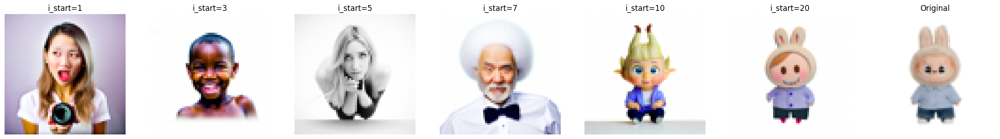
Part 1.7.2: Inpainting
I implemented a diffusion-based inpainting pipeline that reconstructs missing regions of an image using a binary mask and classifier-free guidance. By constraining unmasked regions to remain faithful to the original image at every denoising step, the model realistically hallucinates new content only within the selected region. This method was applied to the Campanile and two custom examples, demonstrating precise, context-aware image completion driven by diffusion priors.
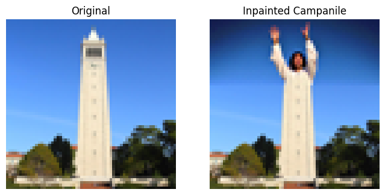
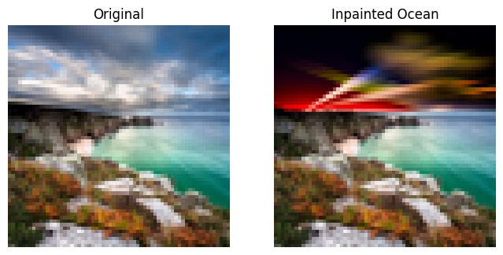

Part 1.7.3: Text-Conditional Image-to-image Translation